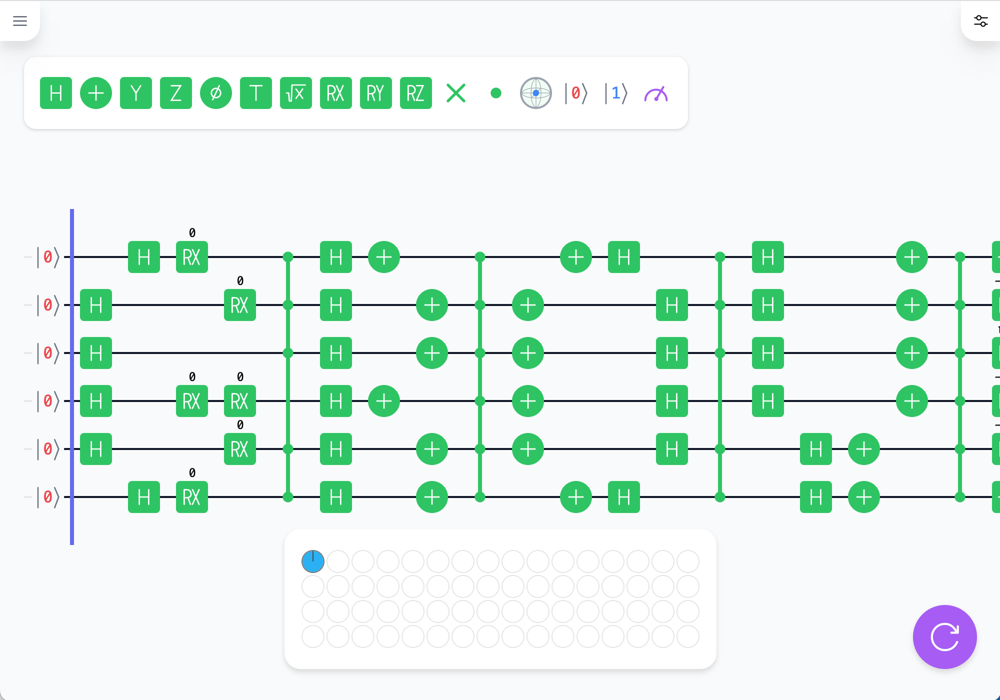

1980 年代初頭に量子コンピュータのアイディアは生まれました{% nmargin_note preskill %}John Preskill, Quantum computing 40 years later (2021) {% endnmargin_note %}。 かの大物理学者ファインマンの「自然をシミュレーションしたければ、量子力学の原理でコンピュータを作らなくてはならない」という言葉が有名です。 現在のあらゆるコンピュータ (ノートパソコンやスマホから最新のゲーム機、世界最速のスパコンまで) の内部構造は、古典物理学、より正確には電磁気学で説明できます。 これは、情報の単位であるビットが、電磁気学に基いた基本素子であるコンデンサとして実装されているからです。 一方でファインマンの言う量子コンピュータは量子力学をベースとしています。 量子コンピュータは原子や電子、光子といった量子をビットとして使い、その不思議な振舞いを利用することでミクロな "自然" のシミュレーション (量子系シミュレーション) に必要な膨大な計算を高速化できるという、まさに夢のコンピュータです。
ファインマンのアイデアをきっかけに、量子コンピュータに適したさらなるアルゴリズム探しが始まりました。 そして 1990 年代には、量子探索{% nmargin_note grover %}開発者であるコンピュータ科学者、ロブ・グローバーの名前にちなんで、グローバーのアルゴリズムとしても知られています。Lov K. Grover, A fast quantum mechanical algorithm for database search (1996){% endnmargin_note %}と量子因数分解{% nmargin_note shore %}開発者である数学者、ピーター・ショアの名前にちなんで、ショアのアルゴリズムとしても知られています。Peter W. Shor, Polynomial-Time Algorithms for Prime Factorization and Discrete Logarithms on a Quantum Computer (1995){% endnmargin_note %}という最も有望で代表的な量子コンピュータアルゴリズムの 2 つが開発されました。
量子探索の威力を理解するために、昔ながらの電話帳で特定の電話番号に一致する名前を検索することを考えてみましょう。電話帳の登録件数が 1 万件だとすると、平均してその半分の 5,000 件には目を通さなければ目的の名前にはたどり着きません。 一方、量子探索アルゴリズムでは、たった 100 回の検索で十分です。 もし量子コンピュータが量子探索で 5,000 回の推測をしたならば、実に 2,500 万件の電話帳を検索できます。 このように、量子探索アルゴリズムは巨大なリストの中から特定のアイテムを効率的に検索できます。
量子因数分解アルゴリズムは、セキュリティに対して脅威 (株価の下落を含む) をもたらすものです。というのも、インターネット・セキュリティの最も一般的な方式である公開鍵暗号は、特定の数学問題（長さ数百桁の数の因数分解など）を事実上解くことが不可能であることに依存しているためです。 量子アルゴリズムは、最もよく知られた古典的なアルゴリズムよりも指数関数的に速くこのタスクを実行できるため、現代の暗号のいくつかの形式は、暗号解読者を阻止できません。
こうした量子アルゴリズムの強力さが比較的よく知られているのとは反対に、量子コンピュータ自体に関しては、正確な現状が知られていません。 派手な量子関連の投資ニュースに便乗してか、量子探索や量子因数分解が現在の量子コンピュータですぐにでも実行できる、と誤解させるような記事も少なくありません。 それどころか「量子重ね合わせ」「量子もつれ」といったキャッチーなキーワードを濫用した怪しいビジネスもちらほら見かけます。
量子コンピュータの正しい知識が広まらない原因の 1 つは、その敷居が高すぎることにあります。 クラウド越しに本物の量子コンピュータを使える現在でさえ、量子コンピュータの初級コンテンツは不足しています。 量子コンピュータを勉強しようとうっかり専門の教科書や大学の講義スライドに手を出してしまい、そこにぎっしり詰まった高度な物理学や数学を前に挫折してしまった方も多いでしょう。
Python や JavaScript などのプログラミング解説書には高度な数式はひとつも出てきません。 ならば、量子コンピュータにも、もっとそんなスタイルのガイドブックやチュートリアルがあってもいいのではないのでしょうか?
実際に、量子コンピュータプログラミングを学ぶのに複雑な数学を理解する必要はありません。 今までやってきたプログラミング学習と同様に、量子コンピュータの命令やアルゴリズムがどのように動作するかの感覚をつかむだけでよいのです。 基本的な命令とアルゴリズムを理解したら、必要に応じて、次のレベルに進むための数学を少しずつ学んでいきましょう。 このことを念頭に置いて、本チュートリアルでは、必要な場合以外は数学的な専門用語を避け、実用的な観点から量子コンピュータプログラミングを紹介します。
このチュートリアルは、量子コンピュータプログラミングの実践的入門です。特長として、我々が開発するオープンソースな量子コンピュータシミューレータ Qni (キューニ){% margin_note qni %}  Qni は量子プログラミング環境を提供する Web サービスです。https://qniapp.net で誰でも無料で利用できます。{% endmargin_note %} をそこかしこで使っています。 以下のようにチュートリアル中に埋め込まれた mini Qni (ミニ・キューニ) で、量子プログラミングについて学んだことをすぐ実験できるようになっています。
Qni を使うと、シミュレータ上であれこれ実験を重ねることで、量子コンピュータを使うための直感的感覚を養うことができます。Qni は、量子プログラムをエレガントに記述するためのグラフィカルなユーザインタフェースを提供しています。操作結果はリアルタイムに表示されるので、実機を使った演習よりもずっと効率的であり教育的でもあります。 より高度な量子アルゴリズムや量子情報といった専門分野を勉強する際にも、Qni は電卓がわりにちょっとした計算にも役立つので、あなたの道具箱に加えていただければと思います。
チュートリアルのもう一つの特長は、チュートリアル中にクイズ{% nmargin_note %}Andy Matuschak 氏によるオープンソースの無料学習ツール Orbit を利用しています。クイズ機能を利用する場合は Orbit の利用規約及びプライバシー・ポリシーを確認してください。{% endnmargin_note %}が埋め込まれていることです。 クイズでは、それぞれの記事のポイントを 1 問 1 答形式で出題します。 一度解いたクイズは、忘却曲線に沿った適切なタイミング (数時間から数日、数ヶ月、時には数年後!) で復習クイズとして再び出題されます。 これによって、読者は比較的少ない労力で学んだことを深く内面化できる仕組みになっています。 もちろん、クイズに答えずにこのチュートリアルを読み進めることもできますが、ぜひ試してみてください。
このチュートリアルは Qni と同様に GitHub でオープンに開発{% nmargin_note qni-github %}GitHub の Qni プロジェクトページ: https://github.com/qniapp/{% endnmargin_note %}しており、読者からのフィードバックを歓迎しています。 typo などのささいな修正でも、ぜひ GitHub でフィードバックをお願いします。また、著者に加わりたい方も、ぜひ Pull Request を送ってください。アップデートを続けていくことで、将来的には新しいトピックにも対応しつつ、初心者にも優しいチュートリアルを充実させていく予定です。
|0⟩ 命令量子ビットの状態を |0⟩ にセット (リセット)。
シンプルな重ね合わせ状態を作る。
量子ビットの適用を条件付きにする。 接続されたゲートは、条件を満たした場合のみに適用される。
量子ビットペア |0⟩ と |1⟩ を入れ替える。
量子ビットがオンかオフかを測定する。